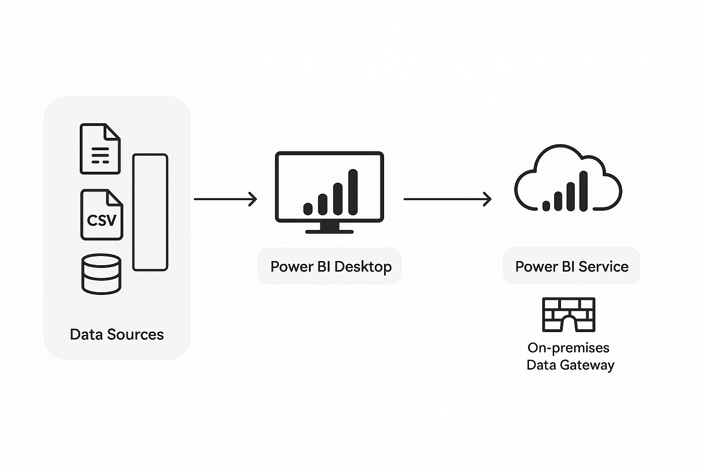
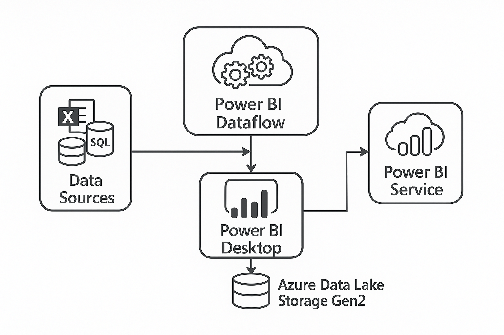

Designing Your Power BI Solution
A "project architecture" refers to the overall design and structure of your Power BI solution, encompassing data sources, data flow, model design, and deployment strategy. Choosing the right architecture is critical for performance, scalability, maintainability, and security.
Key Architectural Considerations:
- Data Volume & Velocity: How much data? How fast does it change? (Impacts Import vs. DirectQuery).
- Data Freshness Requirements: How quickly do users need to see new data? (Real-time vs. daily/hourly refresh).
- Data Source Complexity: Number and types of source systems.
- User Count & Concurrency: How many users will access reports simultaneously?
- Security & Compliance: Data access restrictions, RLS, data residency.
- Skill Sets: Availability of M, DAX, SQL, Azure engineers.
- Budget: Cloud services, premium capacities.
- Governance: How will the solution be managed and controlled?
Architecture Pattern 1: Simple Import Model (Small to Medium Scale)
Description: This is the most common starting point for many Power BI solutions. Data from various sources is imported directly into the Power BI Desktop model.
Components:
- Data Sources: Excel files, CSVs, small databases (SQL Server, SharePoint lists).
- Power BI Desktop: Performs data transformation (Power Query), data modeling (relationships, DAX), and report creation.
- Power BI Service: Hosts the published report, dashboards, and schedules dataset refreshes (via On-premises Data Gateway if sources are on-prem).
Pros:
- Fast Performance: Data is in-memory in VertiPaq engine.
- Full DAX Capabilities: All DAX functions are available.
- Easy to Get Started: Low complexity.
Cons:
- Data Staleness: Data is only as fresh as the last refresh.
- Scalability Limits: Limited by Power BI Premium capacity for dataset size (up to 400 GB for P3, but practically smaller for single files) and refresh frequency.
- Data Duplication: Data is copied into the Power BI model.
Typical Use Case:
Departmental reports, proof-of-concepts, analysis of static or infrequently updated datasets (e.g., monthly sales reports, small HR dashboards).
Architecture Pattern 2: DirectQuery (Large Data, Real-time Needs)
Description: No data is imported into Power BI. Power BI sends queries directly to the source database whenever a visual is interacted with or refreshed.
Components:
- Data Sources: High-performing analytical databases (SQL Data Warehouse/Synapse, Azure SQL Database, Snowflake, Google BigQuery, SAP BW).
- Power BI Desktop: Connects in DirectQuery mode; still defines relationships and DAX measures (with some limitations).
- Power BI Service: Serves queries directly to the source via gateway (if on-prem).
Pros:
- Real-time Data: Always reflects the latest data in the source.
- Handles Large Datasets: No data size limits imposed by Power BI capacity (beyond source limits).
- Source Security: Leverages source database security.
Cons:
- Performance: Can be slower due to round-trips to the source. Complex queries might lead to poor user experience.
- DAX Limitations: Some DAX functions and Power Query transformations are not supported.
- Source Load: Can put significant load on the source database.
Typical Use Case:
Operational dashboards, financial reporting on very large datasets where data freshness is paramount and source database is optimized for analytics (e.g., data warehouse).
Architecture Pattern 3: Composite Model (Hybrid Approach)

Description: Combines Import and DirectQuery tables within a single Power BI model, offering the best of both worlds for specific scenarios.
Components:
- Imported Tables: Smaller, static dimension tables (e.g., Dates, Products, Geography).
- DirectQuery Tables: Large, frequently updated fact tables (e.g., Sales Transactions, IoT sensor data).
- Power BI Desktop/Service: Manages queries to both in-memory and external sources.
Pros:
- Optimized Performance: Import tables provide fast lookups.
- Data Freshness: DirectQuery tables provide real-time data for critical facts.
- Flexibility: Design data models that best fit specific data needs.
Cons:
- Increased Complexity: More challenging to design and manage relationships between different modes.
- Some DAX/Query Limitations: Still subject to some DirectQuery limitations when mixing modes.
- Potential Ambiguity: Careful modeling required to avoid confusing query paths.
Typical Use Case:
Scenarios where dimensions are relatively static but facts are massive and require real-time updates (e.g., retail analytics with daily sales transactions but stable product catalog).
Architecture Pattern 4: Leveraging Dataflows (ETL in the Cloud)

Description: Dataflows are a cloud-based, self-service ETL tool within Power BI Service (or Power Apps). They allow you to centralize and reuse your Power Query transformations.
Components:
- Data Sources: Various.
- Power BI Dataflow: Defines Power Query transformations in a cloud-based environment. Outputs data to Azure Data Lake Storage Gen2 (managed by Power BI).
- Power BI Desktop: Connects to the dataflow as a source, imports the prepared data.
- Power BI Service: Manages dataflow refresh schedules.
Pros:
- Reusability: Cleaned data can be used by multiple datasets and reports.
- Reduced Redundancy: Avoids duplicating ETL logic in every `.pbix` file.
- Decoupling ETL: Separates data preparation from report development.
- Scalability: Leverage Power BI Premium for large-scale dataflows.
Cons:
- Premium Requirement: Some advanced dataflow features require Power BI Premium.
- Learning Curve: Understanding dataflow concepts.
Typical Use Case:
Centralizing data preparation for multiple reports, enabling self-service BI for business users on pre-cleaned data, large organizations with many Power BI developers.
Architecture Pattern 5: Enterprise Data Warehouse/Lakehouse (Robust & Scalable)

Description: For large, complex enterprises, Power BI often sits on top of a well-structured data warehouse or a modern data lakehouse solution (e.g., Azure Synapse Analytics, Databricks).
Components:
- Operational Data Sources: ERPs, CRMs, transactional databases.
- ETL/ELT Pipeline: Tools like Azure Data Factory, SSIS, Spark jobs to extract, transform, and load data into the warehouse/lakehouse.
- Data Warehouse/Lakehouse: Optimized for analytical queries (e.g., Azure Synapse, Databricks, Snowflake, Google BigQuery). Often uses a star/snowflake schema.
- Azure Analysis Services (AAS) / Power BI Premium Per User/Capacity Semantic Model: An optional intermediate layer to host highly optimized semantic models (using Tabular models). Provides extreme performance, scalability, and security for large models.
- Power BI Desktop/Service: Connects to the data warehouse/lakehouse (DirectQuery or Import) or to AAS/Premium semantic model (Live Connection).
Pros:
- Extreme Scalability & Performance: Built for large data volumes and complex analytics.
- Centralized Truth: Single source of truth for organizational data.
- Robust Security & Governance: Comprehensive security layers at each stage.
- Advanced Analytics: Can integrate with machine learning, data science tools.
Cons:
- High Cost: Significant investment in infrastructure and specialized personnel.
- Complex Implementation: Requires deep expertise in data engineering.
- Longer Development Cycles: Initial setup can be time-consuming.
Typical Use Case:
Large enterprises with vast amounts of data, complex analytical needs, strict governance requirements, and existing data infrastructure investments. Ideal when Power BI is one of many BI tools accessing a central data platform.
Choosing the Right Architecture
The best architecture depends entirely on your specific business requirements, data characteristics, budget, and existing infrastructure. Often, organizations start simple and evolve their architecture as their needs grow and data complexity increases.
Consider the trade-offs between data freshness, performance, cost, and development complexity when making your decision.